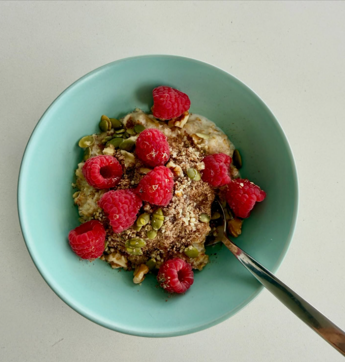
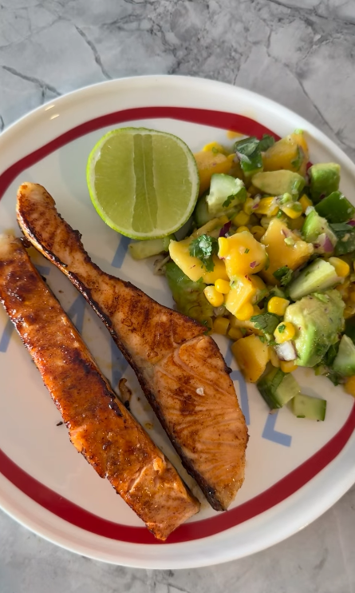
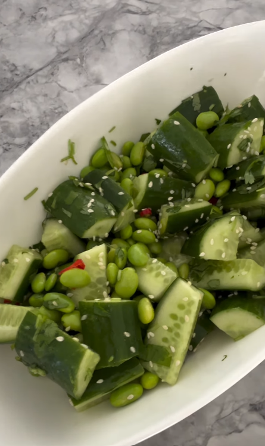
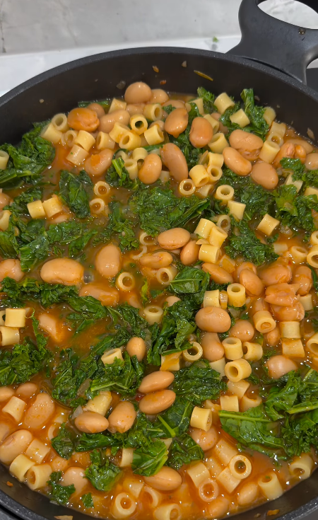
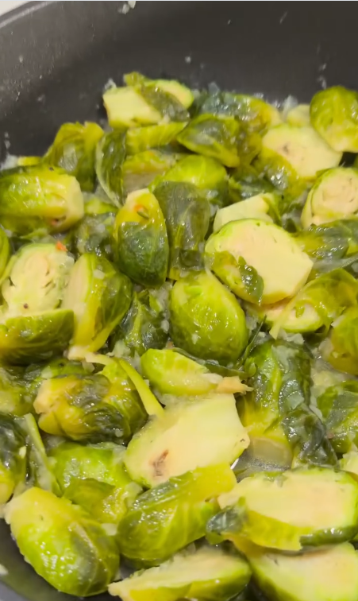
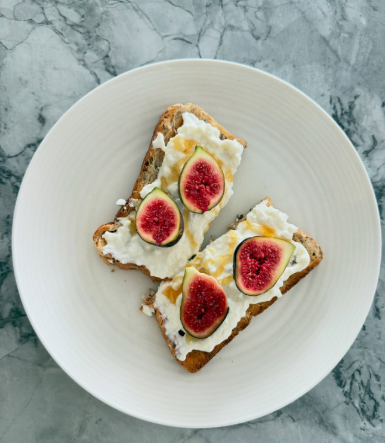
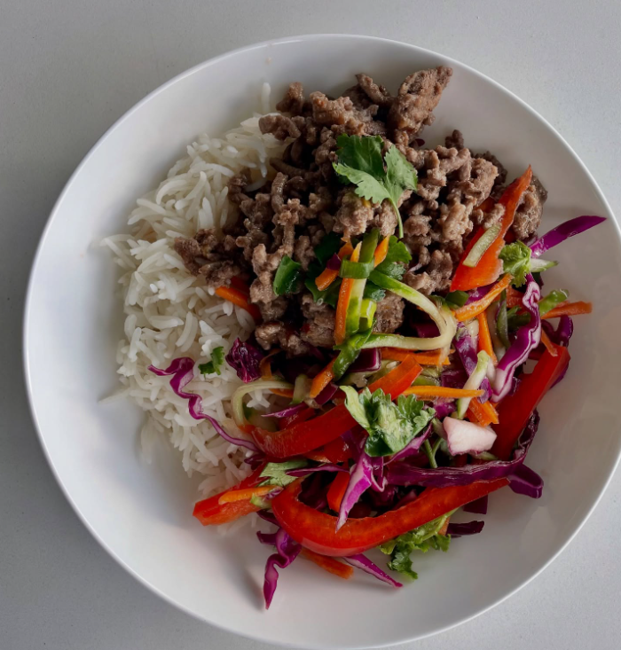
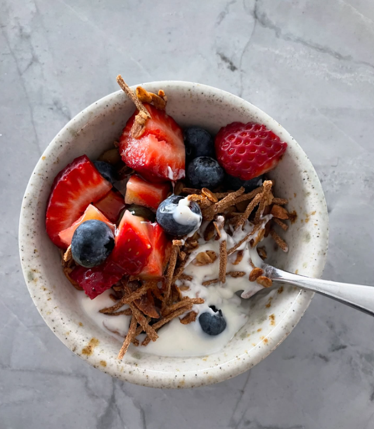

Nourishing, delicious recipes designed around real health goals. Many with video — follow Daniela on Instagram for the full library.

Diabetes
Weight Loss
Gut Health
▶ VIDEO Gut Health
Gut Health
High Protein
Weight Loss
High ProteinDaniela shares new recipes regularly — including video demonstrations — on her Instagram page. Follow along for the full library.
📸 Follow @danielamondello.dietitian